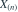
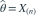

独立来自
独立来自  ，
， 。采用密度
。采用密度  在
在  上的版本，最大似然估计是哪项？
上的版本，最大似然估计是哪项？- A

- B

- C
- D
我已思考，展开答案与解析
正确答案：B
- 可行参数满足 ，似然在该范围内为 ，随
 递减。
递减。 - 因此最大值在边界

取得。
易错提醒忽略支撑约束，直接令导数为零会得不出正确结论。
数学三·概率统计基础专题 · 数学三概率统计基础专题·原创第38题
按数学三常见概率统计知识点原创；不是历年真题或教材原题。
独立来自 ，。采用密度 在 上的版本，最大似然估计是哪项？
递减。
取得。数学三·概率统计基础专题 · 数学三概率统计基础专题·原创第38题
按数学三常见概率统计知识点原创；不是历年真题或教材原题。